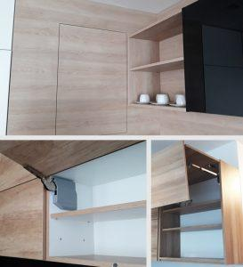
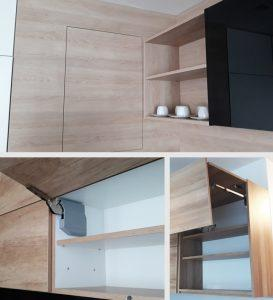
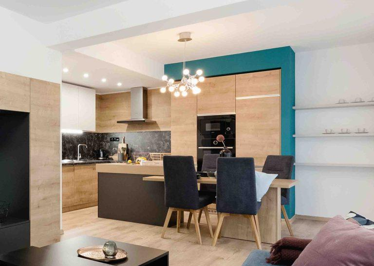

Súťaž
Súťaž
Trendy
5 min čítania
Štatút súťaží na firemnom profile ‚3interier‘
Účelom tohto štatútu je upraviť pravidlá súťaže na Instagramovom profile 3interier s.r.o.
Čítať viacObjavte najnovšie trendy, odborné tipy a príbehy premien, ktoré vám pomôžu vytvoriť domov snov.

Detailný pohľad na proces rekonštrukcie, výber materiálov a riešenie atypických priestorov v historickej budove. Pozrite si premenu krok za krokom.
Súťaž
Účelom tohto štatútu je upraviť pravidlá súťaže na Instagramovom profile 3interier s.r.o.
Čítať viac arrow_forward Rekonštrukcia
Rekonštrukcia
Rekonštrukcia priestorov, či už ide o rodinný dom, byt alebo komerčný priestor, je časovo, fyzicky no najmä psychicky náročná záležitosť...
Čítať viac arrow_forwardPrihláste sa k odberu a získajte náš exkluzívny e-book "10 chýb pri zariaďovaní" zdarma.
 Materiály
Materiály
Porovnanie vlastností, ceny a údržby dvoch najpopulárnejších materiálov pre kuchynské a kúpeľňové dosky.
Čítať viac arrow_forward Minimalizmus
Minimalizmus
Minimalizmus nie je len o bielom nábytku. Je to životná filozofia, ktorá prináša pokoj do vášho domova.
Čítať viac arrow_forward Kancelárie
Kancelárie
Ako hybridná práca mení požiadavky na dizajn office priestorov. Flexibilita, akustika a zóny pre spoluprácu.
Čítať viac arrow_forwardMáte špecifický problém s interiérom? Napíšte nám a možno práve vaša otázka bude témou nášho ďalšieho článku.
Štatút súťaží na firemnom profile ‚3interier‘
Účelom tohto štatútu je upraviť pravidlá súťaže na Instagramovom profile 3interier s.r.o. „3interier“, (ďalej len „súťaž“). Tento štatút je spolu s informáciami uvedenými v konkrétnom súťažnom príspevku v zmysle článku II bod 2 tohto štatútu jediným dokumentom, ktorý záväzne upravuje pravidlá uvedenej súťaže tak, aby boli presne a zrozumiteľne určené podmienky súťaže.
Termín konania súťaže je oznámený v príslušnom súťažnom príspevku na Instagramovom profile ‚3interier‘ „SÚŤAŽ“.
3interier s.r.o.
place Kvetná 7, Malá Ida 044 20
IČO: 50140736
Zapísaná v Obchodnom registri Okresného súdu Košice I, oddiel Sro, vložka č. 38525/V
V Košiciach, dňa 1.8.2018
Rekonštrukcia priestorov, či už ide o rodinný dom, byt alebo komerčný priestor, je časovo, fyzicky no najmä psychicky náročná záležitosť a verte nám, čím lepšie a pedantnejšie sa na ňu pripravíte vopred, tým menej chýb sa počas nej dopustíte.
Ako prvé je na mieste si položiť otázku: ,,Budem mať na rekonštrukciu dostatok času a financií?". Tou ďalšou otázkou, ktorá rozhodne nasleduje je, či sa do rekonštrukcie pustím sám alebo si prizvem odborníka/kov. Tento článok by vám mal aspoň trošku pomôcť pri rozhodovaní a vzhľadom na obšírnosť témy sa v ňom zameriame na bytové priestory.
Bez správneho načasovania, jednoduchého projektu a aspoň akej-takej predstavy to nepôjde.
Na začiatku je vhodné si stanoviť určitý finančný ,,budget” = predstavu, v akom objeme chcete do danej nehnuteľnosti investovať. Malo by to záležať samozrejme od samotnej nehnuteľnosti – v akom štádiu sa nachádza, z akých materiálov je vybudovaná (priečky, nosné steny, podlahy, stropy, a pod.) a teda čo všetko potrebujete v priestore nahradiť úplne, resp. čomu ešte viete správnym postupom predĺžiť životnosť.
Zamerajme sa teda ako prvé na základ – priečky, nosné murivo, podlahy, stropy, otvorové konštrukcie (dvere a okná) a inštalácie (elektrické vedenie, vodovodné potrubia, odpadové potrubia, plynové potrubia, a pod.). Pri bytovom priestore nám vypadáva zo zoznamu obvodové murivo, nakoľko jeho sanácia nie je len vo vašej kompetencii a rekonštrukcia v jeho prípade musí byť komplexná t.j. rieši sa celá bytová budova. Čo by vás rozhodne malo zaujímať je stav inštalácií – najmä elektroinštalácií. Nikdy sa nepúšťajte do rekonštrukcie bez výmeny starých rozvodov z hliníka. Staré rozvody sú doslova časovaná bomba a je problém napájať na nich čokoľvek nové. Ďalej je to dispozícia samotného bytu (členenie priestoru), ktorá je vytvorená vnútornými priečkami – preskúmajte, z čoho sú priečky prevedené (panel, tehla, sadrokartón, umakart…) a zakreslite si úplne jednoducho – čiarovo – aktuálnu dispozíciu na papier. Dispozíciu si následne dôkladne prezrite a skúste si prebehnúť vaše nové požiadavky na priestor. Výmena okien a dverí patri k štandardnej činnosti pri rekonštrukcii a tiež nezabúdame na podlahy, kde povrch volíme vzhľadom na plánovanú záťaž – masívny nábytok, domáce zviera, dieťa, zvýšená záťaž vodou atď. a stropy, kde si pri panelových typoch s viditeľnými nezrovnalosťami môžeme pomôcť zníženými stropmi pomocou SDK podhľadov.
,,Vyhovuje mi orientácia kuchyne a jej veľkosť?; Bude jej výmera dostatočná pre umiestnenie všetkých spotrebičov a zároveň, ostane mi priestor na pracovnú plochu?; Plánujem zabudovať digestor s priamym odťahom alebo sa spoľahnem len na recirkuláciu?; Budem mať v priestore dostatok denného svetla?; Plánujem v kuchyni umiestnenie jedálenského stola?; Plánujem v kuchyni vytvorenie pracovného ostrova?; Plánujem priestor prepojiť s obývacou izbou?"
Pri orientácií kuchyne sú určité limity, ktorým sa nevyhneme a to najmä umiestnenie inštalácií či už v stúpačkách (šachta, prechádzajúca skrz podlažia, kde nájdete vodovodné potrubie, odpadové potrubie, plynové potrubie…) alebo inšt. stenách. Stále však viete pomôcť dispozícií minimálne jej otvorením alebo zmenou tvaru či veľkosti. Množstvo času, ktoré v kuchyni trávite by sa malo odzrkadliť na jej veľkosti – ak rád/a varím, nebudem predsa šetriť na pracovnej ploche a doprajem si otvorený a logicky usporiadaný priestor, aby som si zefektívnil/a svoju prácu.
Rozpočítajte si teda dĺžky hraničných stien na moduly o veľkosti 60 cm, aby ste získali predstavu o rozložení spotrebičov. Držíme sa logickej postupnosti teda ,,vyberiem, umyjem, naporcujem, varím, pečiem, servírujem”. Na potravinové skrine, výsuvné moduly s drôteným systémom či otvorené police počítame moduly šírky 20 až 50 cm. Tieto moduly vám pekne vyplnia zostatkový priestor.

 

Pri otvorených priestoroch obývačka – kuchyňa je dôležité, aby ste zvolili vhodný digestor na odťah pár – priamy odťah do šachty alebo exteriéru. Recirkulačný digestor je nešťastným riešením najmä pri spojených priestoroch a v domácnostiach, kde sa štandardne varí.
Jedálenský stôl alebo ostrovček so sedením? Jednoduchá otázka na vás, ako užívateľa – koľko miest na pevné sedenie potrebujem a do akej miery má pre mňa tradičné stolovanie význam. Kuchynský ostrovček vám okrem možnosti sedenia vie ponúknuť slušný úložný priestor + pracovnú plochu. Jeho nevýhodou je, že patrí rozhodne do väčších kuchýň pre potrebný manipulačný priestor okolo neho.
Nezabúdajte na dostatok denného svetla a keď už to dispozícia neumožňuje, tak na kvalitné osvetlenie – ideálne sa držte zásady na 1 m2 aspoň 200 lm, pri kuchyniach však pokojne aj 400 lm. Pracovnú plochu si dokonale nasvetlíte inštaláciou osvetlenia na spodok horných skriniek – LED pás, trubicové svietidlá… Vhodné je zónovanie so samostatným spínaním – zóna osvetlenia jedálenského stola, zóna osv. pracovnej plochy, zóna centrálneho osvetlenia. V dnešnej dobe využívame samozrejme LED zdroje pre úspornosť a pre kuchyne je viac ako vhodné používať farebnosť svetla v rozsahu 3500 – 4000 K (neutrálna biela).

Keď už máte jasnú predstavu o potrebnej veľkosti kuchyne, zamerajte sa na umiestnenie spomínaných stúpačiek v rámci priestoru. Platí jednoduché pravidlo – čím menej budeme komplikovať trasu sietí (voda, odpad, plyn, vzduchotechnika), tým lacnejšie to bude. Jednoducho, drez, umývačku riadu, varnú dosku (a digestor), v niektorých prípadoch práčku a sušičku, sa snažíme orientovať čo najbližšie k stúpačkám, nakoľko to odbremení značné komplikácie pri ťahaní nových rozvodov v kuchyni.
Toto všetko vás dovedie k vytvoreniu malého projektu vašej kuchyne a mali by ste byť schopní jednoduchého zakreslenia pre profesistov – kde bude drez, kde spotrebiče, kde jedálenský stôl či kuch. ostrovček a pod.
Prajeme veľa zdaru!
V PRÍPADE OTÁZOK NÁS KONTAKTUJTE A RADI VÁM PORADÍME
Kontaktovať nás arrow_forward